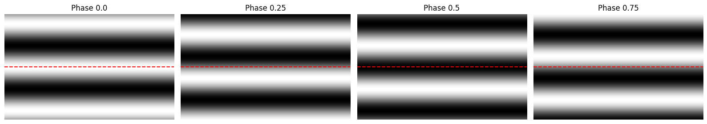

Visual Stimuli#
Probably want figures of the stimuli#
N.B. content here is copied directly from here (mod Python). Tutorial is also here (maybe should stay under vc2p?), but may be useful to clearly list the stimuli in one place (esp. since this is also used for VC-NP). Note that the stimuli specific to VC-NP are not listed here yet, probably will include them at a later date.#
Placeholder for now, will need to be made more generic#
Drifting Gratings#
The drifting gratings stimulus consists of a sinusoidal grating that is presented on the monitor that moves orthogonal to the orientation of the grating, moving in one of 8 directions (called orientation) and at one of 5 temporal frequencies. The directions are specified in units of degrees and temporal frequency in Hz. The grating has a spatial frequency of 0.04 cycles per degree and a contrast of 80%. Each trial is presented for 2 seconds with 1 second of mean luminance gray in between trials.
Static Gratings#
The static gratings stimulus consists of a stationary sinusoidal grating that is flasshed on the monitor at one of 6 orientations, one of 5 spatial frequencies, and one of 4 phases. The grating has a contrast of 80%. Each trial is presented for 0.25 seconds and followed immediately by the next trial without any intertrial interval. There are blanksweeps, where the grating is replaced by the mean luminance gray, interleaved among the trials.
What is the phase of the grating?
The phase refers to the relative position of the grating. Phase 0 and Phase 0.5 are 180° apart so that the peak of the grating of phase 0 lines up with the trough of phase 0.5.

Natural Scenes#
The natural scenes stimulus consists of a 118 black and whiteimages that are flashed on the monitor. Each trial is presented for 0.25 seconds and followed immediately by the next trial without any intertrial interval. There are blanksweeps, where the images are replaced by the mean luminance gray, interleaved in among the trials. The images are taken from three different image sets including CITATIONS HERE
Natural Movies#
There are three different natural movie stimuli:
natural_movie_one
natural_movie_two
natural_movie_three
Natural movie one is presented in every session. It is 30 seconds long and is repeated 10 times in each session. Natural movie two is presented in three_session_B. It is 30 seconds long and is repeated 10 times. Natural movie three is presented in three_session_A. It is 2 minutes long and is presented a total of 10 times, but in two epochs. All of these movies are from the opening scene of Touch of Evil, an Orson Welles film. This was selected because it is a continuous shot with no camera cuts and with a variety of different motion signals.
Locally Sparse Noise#
The locally sparse noise stimulus is used to map the spatial receptive field of the neurons. There are three stimuli that are used. For the data published in June 2016 and October 2016, the locally_sparse_noise stimulus was used, and these were presented in the session called three_session_C. For the data published after that, both locally_sparse_noise_4deg and locally_sparse_noise_8deg were used and these were presented in three_session_C2.
The locally_sparse_noise and locally_sparse_noise_4deg stimulus consisted of a 16 x 28 array of pixels, each 4.65 degrees on a side. Please note, while this stimulus is called locally_sparse_noise_4deg, the pixel size is in fact 4.65 degrees. For each frame of the stimulus a small number of pixels were white and a small number were black, while the rest were mean luminance gray. In total there were ~11 white and black spots in each frame. The white and black spots were distributed such that no two spots were within 5 pixels of each other. Each time a given pixel was occupied by a black (or white) spot, there was a different array of other pixels occupied by either black or white spots. As a result, when all of the frames when that pixel was occupied by the black spot were averaged together, there was no significant structure surrounding the specified pixel. Further, the stimulus was well balanced with regards to the contrast of the pixels, such that while there was a slightly higher probability of a pixel being occupied just outside of the 5-pixel exclusion zone, the probability was equal for pixels of both contrast. Each pixel was occupied by either a white or black spot a variable number of times. The only difference between locally_sparse_noise and locally_sparse_noise_4deg is that the latter is roughly half the trials as the former.
The locally_sparse_noise_8deg stimulus consists of an 8 x 14 array made simply by scaling the 16 x 28 array used for the 4 degree stimulus. Please note, while the name of the stimulus is locally_sparse_noise_4deg, the actual pixel size is 9.3 degrees. The exclusions zone of 5 pixels was 46.5 degrees. This larger pixel size was found to be more effective at eliciting responses in the HVAs.
Spontaneous Activity#
In each session there is at least one five-minute epoch of spontaneous activity. During this epoch the monitor is held at mean luminance gray and there is no patterned stimulus presented. This provides a valuable time that can be used as a baseline comparison for visually evoked activity.